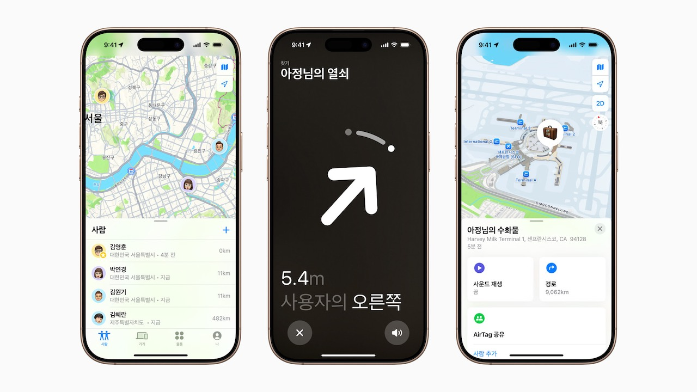

드디어 나의 찾기 및 애플 인텔리전스 한국 서비스 개시 등 한 주간의 애플 소식들 25-04-06
'나의 찾기' 한국 공식 서비스 시작
 나의 찾기 (Apple)
Apple은 오늘 대한민국 내 ‘나의 찾기’ 기능을 확장한다고 발표했다. 덕분에 대한민국 사용자도 이제 나의 찾기 앱을 사용해 사용자의 개인정보를 안전하게 보호하면서도 Apple 기기와 개인 물품의 위치를 지도상에서 확인하고, 자신의 위치를 가족 및 친구와 공유할 수 있다.
iPhone이 한국에 등장하고 Find My 서비스 등장한 지 거의 15년 만에 Apple이 공식적으로 4월 1일 부로 나의 찾기(Find My) 기능의 한국 공식 서비스가 시작📎되었음을 알렸다. 다행히도 한국의 갈라파고스화가 조금씩 풀리고 있기는 하다. 하지만 교통카드나 지도 해외 반출 규제 등 아직 걸림돌이 산적해 있는 것은 안타까운 일이다.
Apple Intelligence 한국어 공식 지원 시작
오늘, 사용자 개인정보를 보호하면서 유용하고 적절한 지능을 제공하는 개인용 지능 시스템, Apple Intelligence가 전 세계 더 많은 사용자에게 확대되며, 8가지의 새로운 언어로 기능을 지원한다. iOS 18.4, iPadOS 18.4, 그리고 macOS Sequoia 15.4의 출시와 함께, Apple Intelligence 기능이 이제 한국어를 비롯해 프랑스어, 독일어, 이탈리아어, 포르투갈어(브라질), 스페인어, 일본어, 중국어(간체)를 지원하며, 싱가포르와 인도를 위한 지역별 영어도 함께 제공된다.
4월 1일 부로 한국에서 Apple Intelligence가 공식 지원 된다. 기능 개발 지연으로 안타까운 Apple Intelligence 이지만 그래도 일부라도 지원되는게 어디일까 싶다. 어쨌든 환영한다. 그저 이 글을 쓰는 작자의 디바이스 중에서 Apple Intelligence가 지원되는 게 하나도 없다는 게 문제일 뿐이다.
소프트웨어 관련 소식들
OS 릴리즈 소식들:
- macOS 15.4
- iOS 18.4
- iOS 16.7.11
- iOS 15.8.4
- iPadOS 18.4
- iPadOS 16.7.11
- iPadOS 15.8.4
- visionOS 2.4
- watchOS 11.4
- tvOS 18.4
소프트웨어 등 릴리즈 소식들:
- Xcode 16.3
- Swift 6.1
- AirPods Pro 2, AirPods 4 Firmware 7E93
- AirPods Max Firmware 7E101
개발자 베타 릴리즈 소식들:
- macOS 15.5 beta
- iOS 18.5 beta
- iPadOS 18.5 beta
- visionOS 2.5 beta
- watchOS 11.5 beta
- tvOS 18.5 beta
- Safari Technology Preview 216
visionOS 2.4 출시로 Vision Pro에서 Apple Intelligence가 미국 영어부터 지원되기 시작했다. 이날 출시된 다른 OS들이 한국어를 비롯한 다양한 언어를 지원하기 시작한 것과 대조적인 느낌이다. 덕분에 당장 Vision Pro에서 Apple Intelligence를 사용하고 싶다면 설정에서 최상위 언어를 미국 영어로 설정해야 한다.
iOS 18.4의 CarPlay에 버그가 있는 듯하다. 일부 CarPlay 통합계기판이 장착된 차량 사용자들이 iOS 18.4로 올린 후 현재 재생 중인 곡의 정보가 표시되지 않는 등 계기판 버그를 경험하고 있다고 한다.
iOS 19는 iPhone 11 시리즈 및 iPhone SE 2와 그 이후의 모델에서만 지원될 가능성이 높아보인다. 즉 iPhone XS 시리즈와 1세대 iPhone SE를 포함한 그 전에 출시된 모델들은 이제 구형이 될 것 같다는 말로 해석할 수 있다. 솔직히 오래 지원하기는 했지만 이 모델들을 주변에서 아직 사용하고 있다는 점에선 좀 안타깝기는 하다.
기타 소식들
Mac 관련 루머들: M5 MacBook Air의 개발이 시작되었으며 2026년 출시될 가능성이 높아보인다. 2026년 출시 목표인 신형 MacBook Pro는 M6, OLED를 탑재하면서도 더 얇은 새로운 디자인이 채용될 것 같다.
iPhone 관련 루머들: iPhone 17 시리즈의 하드웨어 성능 향상은 미묘하겠지만 냉각 시스템 재설계로 성능이 그보다 더 향상될 것이라 추측되는 듯하다. iPhone 17 Pro에 새로운 망원 카메라가 탑재될 가능성도 알려졌다.
iPad 관련 루머들: M6 iPad Pro는 자체 5G 모뎀칩인 C2 탑재 가능성이 거론되고 있다. 보급형 iPad 12는 2026년 출시가 유력해 보인다. 삼성 OLED 패널을 탑재한 iPad Mini가 테스트 중이라는 소문도 들려왔다.
기타 루머들: Smart home hub는 2026년 까지 출시가 연기될 수도 있다고 한다.
AAPL
Apple이 미얀마와 태국 지진 구호 활동에 기부할 것이라 밝혔다. 다만 정확한 금액은 전해지지 않았다. 아마도 적십자사에 기부할 것 같다. 그 돈이 그저 미얀마 군부에게만은 들어가지 않기를 바랄 뿐이다.
프랑스에서 App Tracking Transparency(ATT)로 회사의 권한을 남용했다며 Apple에 약 1억 6200만 달러의 벌금을 부과했다고 한다. 광고주와 앱 개발자들은 ATT가 Apple의 자체 앱에는 적용되지 않는 것이 불평등하며 자사에 재정적 손해를 피해를 입혔다고 주장했는데, 프랑스 규제 당국은 이 주장을 받아들인 모양이다. 사용자 입장에선 이런 불평등 주장 자체가 이해가 안 가는게 Apple 자체 앱들은 광고를 마구 뿌려대지는 않으니 말이다.
인도에서 iPhone 생산량이 두배로 늘어날 것으로 전망된다. 중국 의존도를 낮춘다는 면에서 당연히 우선순위가 높은 전략이다. 거기다 공급망 중에서 인도의 관세가 비교적 낮다는 점이 추진력을 더해줄 가능성이 있는 모양이다.
브라질에서도 App Tracking Transparency와 관련된 조사가 시작된 모양이다. 이 조사는 광고 부문에서의 경쟁사인 Meta의 요구에 의한 것으로 보인다. 브라질이 아니더라도 Meta는 ATT가 유해하다며 지속적으로 비난해왔다.
트럼프 관세로 인해 iPhone 가격이 최대 43% 가량 오를 수도 있다는 경고가 나오고 있다. 아무래도 관세가 꽤 높은 중국에서 제조되는 물량이 가장 많은 게 영향을 미칠 것 같고, 그게 아니더라도 부품이 여러 나라를 오가며 결국 최종 소비자 가격에 악영향을 끼칠 것은 자명한 사실이다.
관세 문제로 Apple은 브라질에서의 iPhone 제조 확대를 검토 중인 듯하다. 브라질은 이번에 기본 관세 10%만 부과된 상태다. Apple은 2011년부터 이미 브라질에서 조립해 왔다고 하니 불가능한 일은 아닐 것 같다.